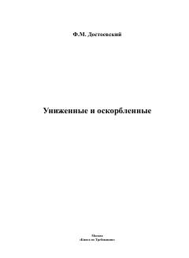

УИDostoevskiyning jamiyatdagi adolatsizlik va insoniy iztiroblar haqidagi klassik romani.
Ushbu roman mashhur rus yozuvchisi Fyodor Dostoevskiyning eng muhim asarlaridan biri bo'lib, unda jamiyatning ezilgan va xo'rlangan qatlamlari taqdiri tasvirlanadi. Asar insoniy qadr-qimmat, adolatsizlik va ruhiy iztiroblar haqida hikoya qiladi.